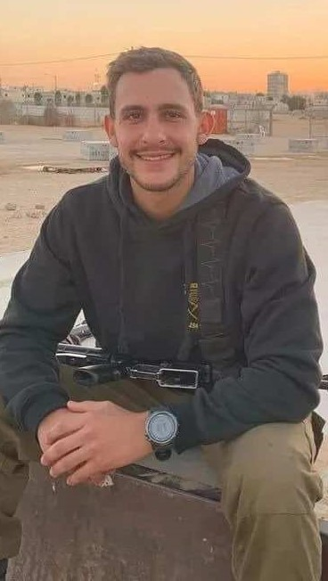

סרן דניאל פרץ
דניאל ז"ל שירת ב-7.10 כמפקד טנק במוצב נחל עוז, הוא נפל בקרב וגופתו נחטפה בידי חמאס.
דניאל נולד בדרום אפריקה, כשהיה בן 13, כחודשיים אחרי בר המצווה שלו, הוא עלה עם משפחתו לישראל.
העלייה לארץ קירבה עוד יותר את דניאל לאחיו הגדול ממנו בשנתיים, יונתן, ונוצר בין שניהם קשר מיוחד ועמוק", סיפרו במטה במשפחות והוסיפו: "דניאל היה מוקף בחברים ואהב ספורט אתגרי.
הוא אהב לרוץ ותמיד נמצא בכושר. אח גדול שאהב לבלות ולצחוק עם אחיותיו הצעירות. הוא מצחיק, חכם ותמיד שם לעזור למי שצריך.
גופתו של דניאל עדיין מוחזקת על ידי חמאס.